hoodscanR & scider: Spatial downstream analysis workshop
Ning Liu
SAiGENCI, University of Adelaide, Adelaide, SA 5000, AustraliaAdelaide Centre of Epigenetics, School of Biomedicine, University of Adelaide, Adelaide, SA 5000, Australianing.liu@adelaide.edu.au
Nora Liu
SAiGENCI, University of Adelaide, Adelaide, SA 5000, AustraliaAdelaide Centre of Epigenetics, School of Biomedicine, University of Adelaide, Adelaide, SA 5000, Australianora.liu@adelaide.edu.au
Monika Mohenska
SAiGENCI, University of Adelaide, Adelaide, SA 5000, AustraliaAdelaide Centre of Epigenetics, School of Biomedicine, University of Adelaide, Adelaide, SA 5000, Australiamonika.mohenska@adelaide.edu.au
Jose Polo
SAiGENCI, University of Adelaide, Adelaide, SA 5000, AustraliaAdelaide Centre of Epigenetics, School of Biomedicine, University of Adelaide, Adelaide, SA 5000, AustraliaAustralian Regenerative Medicine Institute and Systems Biology Institute Australia, Monash University, Clayton, VIC 3800, Australiajose.polo@adelaide.edu.au
Dec 2025
Source:vignettes/hoodscanR_scider_workshop.Rmd
hoodscanR_scider_workshop.Rmd
R version: R Under development (unstable)
(2025-12-07 r89119)
Bioconductor version:
3.23
Welcome
This 90‑minute, hands‑on workshop introduces two complementary Bioconductor packages for spatial transcriptomics (ST):
-
hoodscanR — discover local cell
neighborhoods and perform neighborhood‑based downstream
analysis.
- scider — estimate cell type–specific spatial densities, identify cell-type-specific ROIs and contours, and run density‑driven analyses.
We’ll start with local structure (hoodscanR), then zoom out to density (scider).
Data
Use either: (a) a published Xenium example in the vignettes below, or (b) your own ST dataset (counts + coordinates).
Part A — Local neighborhoods with hoodscanR
Below is an edited version of the hoodscanR quick start, adapted for a live workshop.
knitr::opts_chunk$set(echo = TRUE, message = FALSE, warning = FALSE, dpi = 96)Introduction
hoodscanR is an R package for analysing cellular
neighborhoods in single‑cell‑resolution ST data.
It is built on the SpatialExperiment
infrastructure and produces per‑cell neighborhood annotations,
co‑localisation statistics, and neighborhood‑based clustering.
Installation
# if (!require("BiocManager", quietly = TRUE)) install.packages("BiocManager")
# BiocManager::install("hoodscanR")
# Development version
# devtools::install_github("DavisLaboratory/hoodscanR")
suppressPackageStartupMessages({
library(SummarizedExperiment)
library(SingleCellExperiment)
library(SpatialExperiment)
})
library(hoodscanR)
ws_colors <- c(
"#FFBE7D", "#8E3B5D", "#1B263B", "#778DA9", "#BB3E03",
"#D37295", "#0A9396", "#8CD17D", "#FFD700", "#90EE90",
"#9B2226", "#E15759", "#9467BD", "#F28E2B", "#2EFEF7",
"#EE9B00", "#CA6702", "#94D2BD", "#E9D8A6", "#005F73",
"#32CD32", "#C5B0D5", "#3B3B3B", "#000080", "#2F4F4F",
"#FF00FF", "#7BA05B", "#AFEEEE", "#FF9D9A", "#BAB0AC",
"#59A14F"
)Data exploration
In this workshop we use a breast‑cancer tissue section from Janesick et al. (2023, Nature Communications), which introduced the Xenium in‑situ platform. This FFPE human breast tumour (ER+/HER2+, Stage II‑B) was profiled with a targeted 313‑gene panel using rolling‑circle amplification and cyclic fluorescent probe imaging, providing sub‑cellular transcript localisation. This dataset is ideal for combining neighborhood‑level and density‑level spatial analyses.
spe <- readRDS("../inst/extdata/spe_S1_Rep1_downsampled.RDS")Let’s confirm the structure of the SpatialExperiment
object and its key elements.
spe # dimensions, assays, and metadata## class: SpatialExperiment
## dim: 313 20000
## metadata(0):
## assays(1): counts
## rownames(313): ABCC11 ACTA2 ... ZEB2 ZNF562
## rowData names(0):
## colnames(20000): 74255 120700 ... 138093 109402
## colData names(14): orig.ident nCount_RNA ... cell_type sample_id
## reducedDimNames(0):
## mainExpName: NULL
## altExpNames(0):
## spatialCoords names(2) : x_centroid y_centroid
## imgData names(0):
assayNames(spe)## [1] "counts"## DataFrame with 6 rows and 14 columns
## orig.ident nCount_RNA nFeature_RNA transcript_counts
## <factor> <numeric> <integer> <integer>
## 74255 S1_Rep1 112 53 112
## 120700 S1_Rep1 24 18 24
## 88401 S1_Rep1 188 83 188
## 49497 S1_Rep1 147 70 147
## 81648 S1_Rep1 114 67 114
## 116257 S1_Rep1 155 63 155
## control_probe_counts control_codeword_counts total_counts cell_area
## <integer> <integer> <integer> <numeric>
## 74255 0 0 112 231.5161
## 120700 0 0 24 25.0617
## 88401 1 0 189 269.4022
## 49497 0 0 147 122.8702
## 81648 0 0 114 80.3781
## 116257 0 0 155 559.8923
## nucleus_area RNA_snn_res.0.3 seurat_clusters ident cell_type
## <numeric> <factor> <factor> <factor> <character>
## 74255 41.9953 10 10 10 B
## 120700 14.6306 3 3 3 B
## 88401 30.9320 8 8 8 B
## 49497 40.2342 10 10 10 B
## 81648 33.1898 10 10 10 B
## 116257 29.9838 8 8 8 B
## sample_id
## <character>
## 74255 S1_Rep1
## 120700 S1_Rep1
## 88401 S1_Rep1
## 49497 S1_Rep1
## 81648 S1_Rep1
## 116257 S1_Rep1##
## B Basal Cancer Endothelial Fibroblast LP
## 470 965 7756 1010 5279 443
## Macrophage Mast Pericyte T_NK
## 1617 105 376 1979
head(spatialCoords(spe))## x_centroid y_centroid
## 74255 2091.0556 2341.9031
## 120700 5747.7768 188.2580
## 88401 2897.7724 921.8289
## 49497 983.7776 1682.0426
## 81648 2196.9489 3474.3528
## 116257 4195.5660 2913.5248The readHoodData function can format the
spatialExperiment input object as desired for all other functions in the
hoodscanR package.
spe <- readHoodData(spe, anno_col = "cell_type")We can have a look at the tissue and cell positions by using the
function plotTissue.
The plotTissue function is very flexible, it takes all
parameters that can go into geom_point() or
aes(). And the output is a ggplot object, therefore is
easily customised.
plotTissue(spe, color = cell_annotation, size = 1, alpha = 0.9) +
scale_color_manual(values = ws_colors) +
guides(color = guide_legend(override.aes = list(shape = 15, size = 5)))
Neighborhood detection
Identify the k nearest cells for each cell (reduced to
k = 50 for speed during the workshop):
fnc <- findNearCells(spe, k = 50)
lapply(fnc, function(x) x[1:10, 1:5]) # peek at annotation/distance matrices## $cells
## nearest_cell_1 nearest_cell_2 nearest_cell_3 nearest_cell_4
## 74255 Fibroblast T_NK T_NK Macrophage
## 120700 T_NK T_NK T_NK T_NK
## 88401 Fibroblast Cancer Pericyte Cancer
## 49497 Fibroblast Cancer Cancer Cancer
## 81648 T_NK Macrophage Fibroblast Fibroblast
## 116257 Macrophage Fibroblast Macrophage Cancer
## 135391 B Fibroblast T_NK Fibroblast
## 158544 Mast Fibroblast Fibroblast Fibroblast
## 102914 Macrophage Fibroblast T_NK Pericyte
## 163536 Fibroblast Fibroblast Fibroblast Fibroblast
## nearest_cell_5
## 74255 Endothelial
## 120700 T_NK
## 88401 T_NK
## 49497 Cancer
## 81648 T_NK
## 116257 T_NK
## 135391 T_NK
## 158544 Fibroblast
## 102914 T_NK
## 163536 Fibroblast
##
## $distance
## nearest_cell_1 nearest_cell_2 nearest_cell_3 nearest_cell_4
## 74255 9.583545 32.99529 45.40122 47.88366
## 120700 6.958143 23.65510 28.53219 30.79678
## 88401 12.219895 31.90695 37.55933 43.91675
## 49497 20.698549 30.85904 47.98640 60.17125
## 81648 22.667176 22.93218 23.73071 24.09427
## 116257 35.390693 45.01257 45.02927 64.15289
## 135391 26.671208 32.78372 38.22396 40.21649
## 158544 37.271788 37.69992 39.42761 55.23958
## 102914 31.710921 31.84313 33.89131 34.96228
## 163536 19.170032 26.65044 50.63644 69.48550
## nearest_cell_5
## 74255 49.77884
## 120700 32.26041
## 88401 50.63844
## 49497 65.72077
## 81648 25.14477
## 116257 65.29374
## 135391 42.47379
## 158544 58.49778
## 102914 36.36531
## 163536 85.83416Compute per‑cell neighborhood probabilities. The
scanHoods function contains the core algorithm of
hoodscanR, which is controlled by the hyperparameter tau.
By default, tau is set to median(m**2)/5 as m
is the distance matrix (this was tested in multiple datasets). Smaller
tau value assign greater weights to nearby cells, while
larger value consider more distant cells as contributors to the
neighborhood. In extreme case, if one want to have equal weights of all
k cells, set parameter mode to smoothFadeout,
it will search for the desired tau automatically.
pm <- scanHoods(fnc$distance)
pm[1:10, 1:5]## nearest_cell_1 nearest_cell_2 nearest_cell_3 nearest_cell_4
## 74255 0.24743309 0.15632692 0.09987663 0.08977103
## 120700 0.08228149 0.06501960 0.05782637 0.05435597
## 88401 0.20202190 0.13539572 0.11299346 0.08900804
## 49497 0.31377066 0.24649796 0.13232927 0.07211178
## 81648 0.05821776 0.05789459 0.05690935 0.05645536
## 116257 0.27763912 0.19440697 0.19427243 0.07425136
## 135391 0.11980032 0.10133376 0.08481507 0.07892335
## 158544 0.17449071 0.17192975 0.16169373 0.08114011
## 102914 0.08697412 0.08663813 0.08142812 0.07870863
## 163536 0.41005005 0.35016022 0.14907471 0.05253415
## nearest_cell_5
## 74255 0.08243438
## 120700 0.05209352
## 88401 0.06641712
## 49497 0.05226846
## 81648 0.05512609
## 116257 0.06936819
## 135391 0.07242089
## 158544 0.06840683
## 102914 0.07516263
## 163536 0.01630978And the the probablities add up to 1.
## 64273 122951 33068 40855 37751 119357 137891 34847 3685 74382 25775
## 1 1 1 1 1 1 1 1 1 1 1
## 36304 7828 78796 79565 157384 15543 57759 118926 152769 101434 23824
## 1 1 1 1 1 1 1 1 1 1 1
## 138336 14687 135529 82218 29269 94595 50009 80326 35063 61354 69081
## 1 1 1 1 1 1 1 1 1 1 1
## 143719 63742 137133 5897 108108 86337 155911 53863 62849 97458 61335
## 1 1 1 1 1 1 1 1 1 1 1
## 164462 57137 31942 38357 63500 105802
## 1 1 1 1 1 1The probability matrix can then be aggregated by annotation (cell type in this case):
hoods <- mergeByGroup(pm, fnc$cells)
hoods[1:10, ]## B Basal Cancer Endothelial Fibroblast
## 74255 0.000000e+00 0.000000000 0.0000000000 8.243657e-02 0.45948075
## 120700 6.520852e-02 0.002271016 0.0000000000 0.000000e+00 0.02146852
## 88401 0.000000e+00 0.000000000 0.5136217518 6.601021e-04 0.20203062
## 49497 0.000000e+00 0.000000000 0.6352692624 5.657295e-05 0.31404660
## 81648 2.366055e-01 0.000000000 0.0000000000 4.875570e-03 0.21110334
## 116257 1.712587e-03 0.001866095 0.1864529116 2.086787e-06 0.23246693
## 135391 1.252779e-01 0.000000000 0.0000000000 1.024121e-03 0.42545186
## 158544 4.472992e-03 0.001061393 0.0004357638 2.319661e-02 0.77268124
## 102914 7.548474e-02 0.000000000 0.0012465501 6.352122e-04 0.27777566
## 163536 5.802003e-07 0.000000000 0.0028244743 9.152311e-05 0.99294550
## LP Macrophage Mast Pericyte T_NK
## 74255 0.000000e+00 1.468311e-01 0.0000000000 7.848602e-05 0.311173091
## 120700 0.000000e+00 4.078835e-02 0.0000000000 5.123326e-02 0.819030323
## 88401 0.000000e+00 1.310042e-02 0.0000000000 1.474055e-01 0.123181624
## 49497 0.000000e+00 1.263050e-02 0.0000000000 1.421058e-02 0.023786485
## 81648 0.000000e+00 1.000308e-01 0.0000000000 0.000000e+00 0.447384775
## 116257 1.070287e-06 5.071623e-01 0.0000000000 0.000000e+00 0.070335988
## 135391 0.000000e+00 5.588532e-02 0.0153970061 0.000000e+00 0.376963791
## 158544 0.000000e+00 6.544765e-04 0.1744907144 1.792423e-03 0.021214396
## 102914 0.000000e+00 1.615795e-01 0.0022524139 8.248192e-02 0.398543991
## 163536 0.000000e+00 3.104429e-07 0.0008273785 0.000000e+00 0.003310232neighborhood composition and clustering
We plot randomly plot 10 cells to see the output of neighborhood
scanning using plotHoodMat. In this plot, each value
represent the probability of the each cell (each row) located in each
cell type neighborhood.
plotHoodMat(hoods, n = 10, hm_height = 5)
Or to check the cells-of-interest with the parameter
targetCells.
plotHoodMat(hoods, targetCells = c("14114", "17216"), hm_height = 1)
plotTissue(spe, targetcell = "14114", targetsize = 7,
color = cell_annotation, size = 5, alpha = 0.9) +
scale_color_manual(values = ws_colors)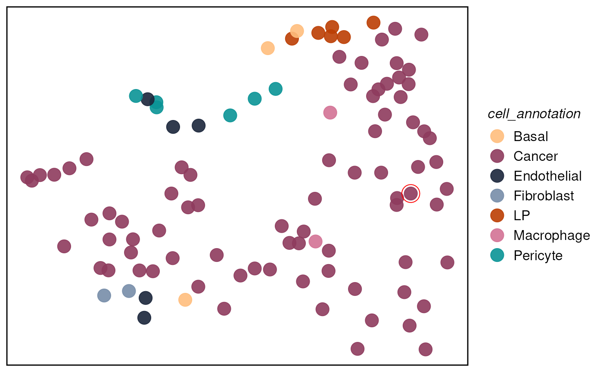
We can then attach neighborhood probabilities back to
spe and compute summary metrics.
We can use calcMetrics to calculate entropy and
perplexity of the probability matrix so that we can have a summarisation
of the neighborhood distribution across the tissue slide, i.e. where
neighborhood is more distinct and where is more mixed.
While both entropy and perplexity measure the mixture of neighborhood of each cell, perplexity can be more intuitive for the human mind as the value of it actually mean something. For example, perplexity of 1 means the cell is located in a very distinct neighborhood, perplexity of 2 means the cell is located in a mixed neighborhood, and the probability is about 50% to 50%.
spe <- mergeHoodSpe(spe, hoods)
spe <- calcMetrics(spe, pm_cols = colnames(hoods)) # entropy & perplexityMap entropy/perplexity across the tissue:
plotTissue(spe, color = entropy, size = 1.5) +
scale_color_gradient(low = "darkslateblue", high = "gold")
plotTissue(spe, color = perplexity, size = 1.5) +
scale_color_gradient(low = "darkslategray", high = "gold")
We can perform neighborhood colocalisation analysis using
plotColocal. This function compute pearson correlation on
the probability distribution of each cell. Here we can see in the test
data, immune cells are more likely to co-localise, luminal progeniotr
(LP) cells and Basal cells are more likely to colocalise. Cancer cells
have overall negative correlation to other immune cells, indicating no
immune infiltration on this sample.
hood_colocal_p <- plotColocal(spe, pm_cols = colnames(hoods))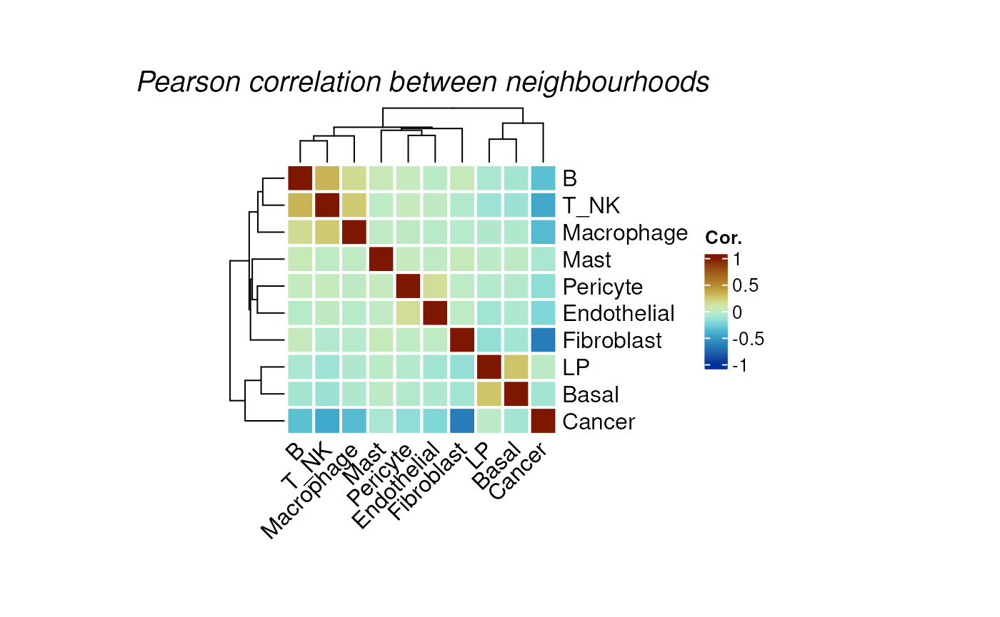
We can cluster the cells by their neighborhood probability
distribution using clustByHood.
set.seed(88)
spe <- clustByHood(spe, pm_cols = colnames(hoods), k = 9)We can see what are the neighborhood distributions look like in each
cluster using plotProbDist.
plotProbDist(
spe, pm_cols = colnames(hoods), by_cluster = TRUE, plot_all = TRUE,
fill = hoods, show_clusters = as.character(seq(9)), outlier.size = 0.1
) +
scale_fill_manual(values = ws_colors) +
theme(legend.position = "none")
We can plot the clusters on the tissue slide, agian using
plotTissue.
plotTissue(spe, color = clusters, size = 1) +
scale_color_manual(values = ws_colors[10:20]) +
guides(color = guide_legend(override.aes = list(shape = 15, size = 5)))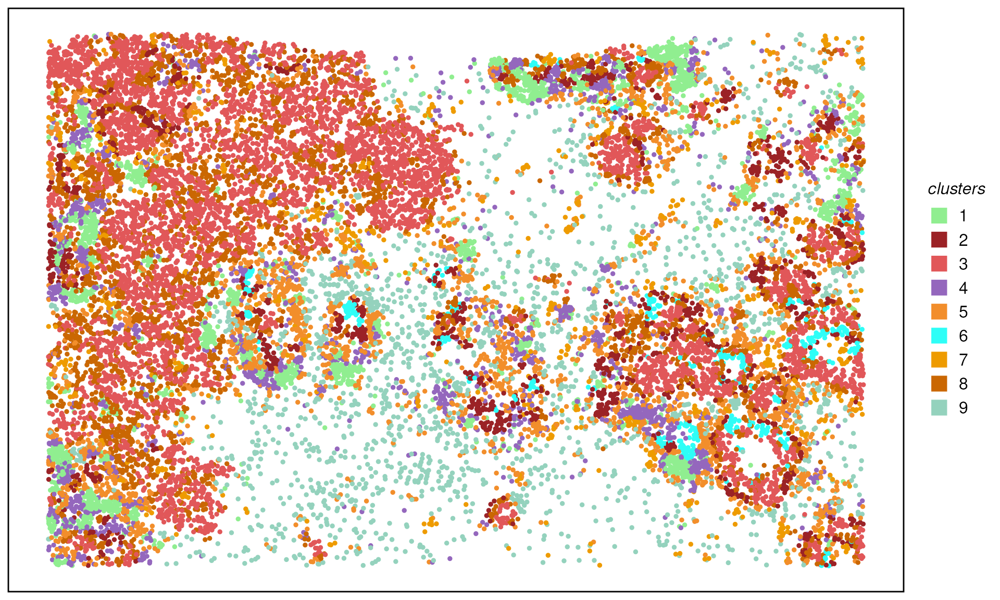
We can then mannual annotated the cluster by the distribution of cell type neighborhoods.
clust_anno <- data.frame(
clusters = as.character(seq(9)),
cluster_annotation = c(
"NearCancer","Cancer","Cancer",
"ImmuneInfiltration","ImmuneTME","TME",
"TME","ImmuneTME","ImmuneTME"
)
)
spe$cluster_annotation <- as.data.frame(colData(spe)) %>%
#dplyr::select(-cluster_annotation) %>%
dplyr::left_join(clust_anno, by = "clusters") %>%
dplyr::pull(cluster_annotation)
plotTissue(spe, color = cluster_annotation, size = 1, reverseY = FALSE) +
scale_color_manual(values = ws_colors[3:10]) +
guides(color = guide_legend(override.aes = list(shape = 15, size = 5)))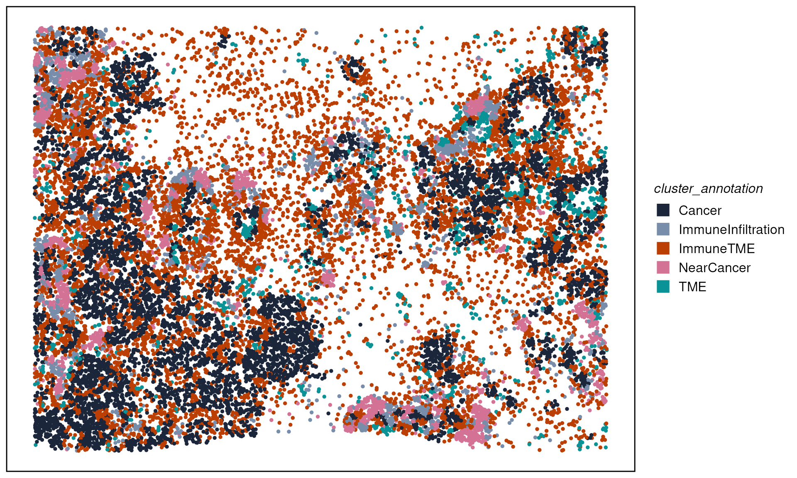
Comparing expression across neighborhood contexts
As an illustration, we want to look at if spatial neighborhoods play a role in cancer cells from “Near Cancer” and “ImmuneInfiltration” neighborhoods.
We can first subset cells that are “Cancer” cell types and located in “NearCancer” and “ImmnueInfiltration” neighborhoods.
spe_c_nc <- spe[, spe$cluster_annotation == "NearCancer" & spe$cell_annotation == "Cancer"]
spe_c_nc$group <- "Cancer_NearCancerHoods"
spe_c_ii <- spe[, spe$cluster_annotation == "ImmuneInfiltration" & spe$cell_annotation == "Cancer"]
spe_c_ii$group <- "Cancer_ImmuneInfiltrationHoods"
spe_subset <- cbind(spe_c_nc, spe_c_ii)
plotTissue(spe_subset, size = 2, color = group, reverseY = FALSE) +
scale_color_manual(values = c("tomato", "royalblue")) +
guides(color = guide_legend(override.aes = list(shape = 15, size = 5))) We can then perform differential expression (DE) analysis comparing
cancer cells from different neighborhoods. DE can be performed in
single-cell style, i.e. using tools like
We can then perform differential expression (DE) analysis comparing
cancer cells from different neighborhoods. DE can be performed in
single-cell style, i.e. using tools like Seurat or
Scran. Here we demonstrate a quick one using the
FindMarkers function from Seurat.
When data available (data with replicates), we strongly recommend
using pseudo-bulk strategy with DE pipeline such as edgeR
or limma-voom to give a more robust statistical
inference.
library(Seurat)
seu <- CreateSeuratObject(
counts = assay(spe_subset, "counts"),
meta.data = as.data.frame(colData(spe_subset))
) %>% NormalizeData() %>% ScaleData()
Idents(seu) <- "group"
c.de <- FindMarkers(seu, ident.1 = "Cancer_NearCancerHoods",
ident.2 = "Cancer_ImmuneInfiltrationHoods",
verbose = FALSE)
de_df <- c.de %>%
dplyr::mutate(score = avg_log2FC * -log10(p_val_adj + 8.00000e-324) * (pct.1 - pct.2)) %>%
dplyr::arrange(dplyr::desc(score))
Seurat::DoHeatmap(seu, features = rownames(head(de_df, n = 30)), label = FALSE)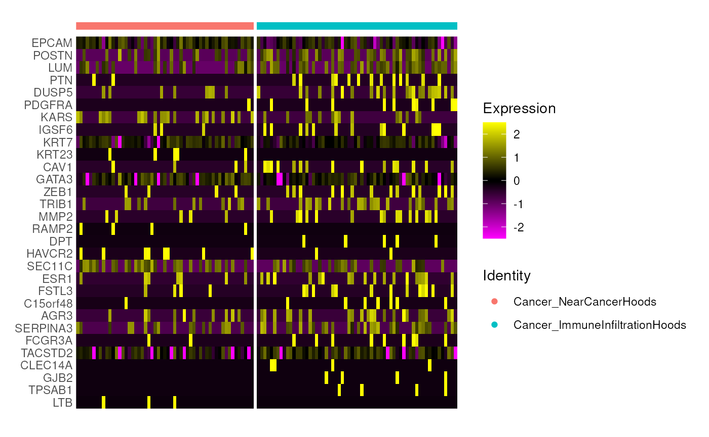
Part B — Cell‑type density, ROI and contours identification with scider
knitr::opts_chunk$set(echo = TRUE, message = FALSE, warning = FALSE, dpi = 200)
suppressWarnings(library(tidyverse))
suppressMessages(library(scider))
suppressMessages(library(SpatialExperiment))scider models global cell‑type density
within a tissue section using the SpatialExperiment class,
and supports co‑localisation, ROI detection, and differential density
analyses.
Installation
# if (!require("BiocManager", quietly = TRUE)) install.packages("BiocManager")
# BiocManager::install("scider")
# Development version
# devtools::install_github("ChenLaboratory/scider")scider is a R package providing functions to model the global density of cells in a slide of spatial transcriptomics data. Same as hoodscanR, all functions in the package are built based on the SpatialExperiment object, allowing integration into various ST-related packages from Bioconductor. After modelling density, the package allows for serveral downstream analysis, including colocalization analysis, boundary detection analysis and differential density analysis.
Load data
Again, we will use the same Xenium Breast Cancer dataset.
spe <- readRDS("../inst/extdata/spe_S1_Rep1_downsampled.RDS")Similarly, in scider, we can use the function
plotSpatial to visualise the cell position and color the
cells by cell types.
plotSpatial(spe, group.by = "cell_type", pt.alpha = 0.8)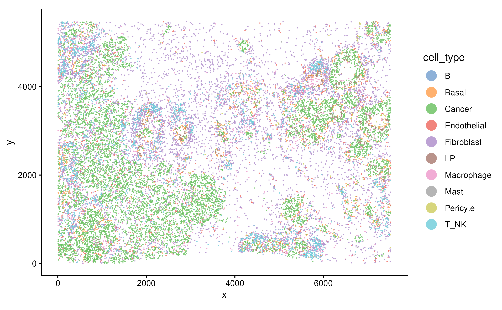
Grid‑based analysis
Density calculation
We can perform density calculation for each cell type using function
gridDensity. The calculated density and grid information
are saved in the metadata of the SpatialExperimnet object.
spe <- gridDensity(spe, id = "cell_type")
names(metadata(spe))## [1] "grid_density" "grid_info"
metadata(spe)$grid_density## DataFrame with 4864 rows and 16 columns
## x_grid y_grid node_x node_y node density_b
## <numeric> <numeric> <numeric> <numeric> <character> <numeric>
## 1 3.44018 5.24616 1 1 1-1 0.0136778
## 2 103.44018 5.24616 2 1 2-1 0.0254621
## 3 203.44018 5.24616 3 1 3-1 0.0413941
## 4 303.44018 5.24616 4 1 4-1 0.0567465
## 5 403.44018 5.24616 5 1 5-1 0.0639556
## ... ... ... ... ... ... ...
## 4860 7153.44 5461.21 72 64 72-64 0.00250819
## 4861 7253.44 5461.21 73 64 73-64 0.00248650
## 4862 7353.44 5461.21 74 64 74-64 0.00214826
## 4863 7453.44 5461.21 75 64 75-64 0.00176898
## 4864 7553.44 5461.21 76 64 76-64 0.00151352
## density_basal density_cancer density_endothelial density_fibroblast
## <numeric> <numeric> <numeric> <numeric>
## 1 0.00578242 3.69455 0.294356 0.196549
## 2 0.01649517 3.92956 0.280853 0.242395
## 3 0.04190043 4.10132 0.273483 0.317257
## 4 0.09155611 4.21823 0.274528 0.405877
## 5 0.16752020 4.39767 0.281366 0.470655
## ... ... ... ... ...
## 4860 0.660856 2.16673 0.227697 1.060322
## 4861 0.652468 2.09274 0.242455 0.959035
## 4862 0.604787 2.00462 0.235283 0.850291
## 4863 0.546192 1.99801 0.208185 0.741357
## 4864 0.491739 2.05538 0.169969 0.634689
## density_lp density_macrophage density_mast density_pericyte density_t_nk
## <numeric> <numeric> <numeric> <numeric> <numeric>
## 1 0.00102109 0.127496 0.00328644 0.0453230 0.0674213
## 2 0.00319990 0.146139 0.00695295 0.0562421 0.0848778
## 3 0.00876861 0.161572 0.01284611 0.0711017 0.0990458
## 4 0.02029653 0.170810 0.01997703 0.0907528 0.1036577
## 5 0.03862952 0.179666 0.02544209 0.1122147 0.0938794
## ... ... ... ... ... ...
## 4860 0.338591 0.195647 0.002983129 0.07538390 0.208735
## 4861 0.364480 0.195981 0.002107648 0.03106248 0.240008
## 4862 0.350601 0.173952 0.001370364 0.01078686 0.232854
## 4863 0.318911 0.138645 0.000800116 0.00337854 0.198144
## 4864 0.285185 0.102290 0.000420181 0.00103729 0.154420
## density_overall
## <numeric>
## 1 4.44947
## 2 4.79218
## 3 5.12869
## 4 5.45244
## 5 5.83099
## ... ...
## 4860 4.93945
## 4861 4.78282
## 4862 4.46669
## 4863 4.15539
## 4864 3.89664We can visualise the overall cell density of the whole tissue using
function plotDensity.
plotDensity(spe)
The parameter probs control the filtering when plotting.
Since we didn’t specify cell type of interest in coi
parameter when running gridDensity. It will compute cell
density of all cell types. In a tumor sample, usually cancer region
would have higher cell density.
plotDensity(spe, probs = 0)
We can also visualise the density of individual cell type, e.g., fibroblast cells or cancer cells.
plotDensity(spe, coi = "Fibroblast") + plotDensity(spe, coi = "Cancer")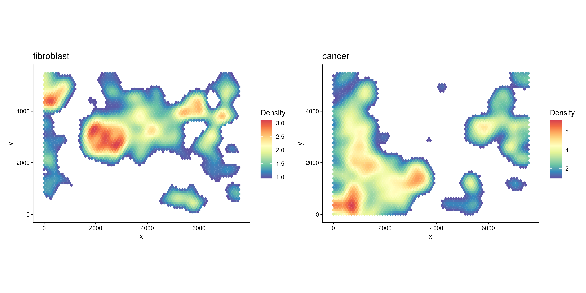
Find Regions of Interest (ROIs)
After obtaining grid-based density for each COI, we can then detect regions-of-interest (ROIs) based on density or select by user.
To detect ROIs automatically, we can use the function
findROI.
The detected ROIs are saved in the metadata of the SpatialExperiment object.
Here we identify ROIs based on the cancer cell density.
spe <- findROI(spe, coi = "Cancer")
metadata(spe)$cancer_roi## DataFrame with 705 rows and 6 columns
## component members x y xcoord ycoord
## <factor> <character> <character> <character> <numeric> <numeric>
## 1 1 1-1 1 1 3.44018 5.24616
## 2 1 2-1 2 1 103.44018 5.24616
## 3 1 3-1 3 1 203.44018 5.24616
## 4 1 4-1 4 1 303.44018 5.24616
## 5 1 5-1 5 1 403.44018 5.24616
## ... ... ... ... ... ... ...
## 701 7 61-42 61 42 6053.44 3555.95
## 702 7 62-42 62 42 6153.44 3555.95
## 703 7 63-42 63 42 6253.44 3555.95
## 704 7 62-43 62 43 6103.44 3642.55
## 705 7 63-43 63 43 6203.44 3642.55We can visualise the ROIs with function plotROI.
plotROI(spe, roi = "Cancer")
Many parameters can be tuned in findROI(). The
method control what algorithm to be used when defining ROIs
(Greedy, Walktrap, Connected, HDbscan etc). The probs
control the proportion of cells (based on density) that go into the
identification of ROIs.
spe1 <- findROI(spe, coi = "Cancer", probs = 0.6)
spe2 <- findROI(spe, coi = "Cancer", probs = 0.6, method = "connected")
spe3 <- findROI(spe, coi = "Cancer", probs = 0.6, method = "walktrap")
spe4 <- findROI(spe, coi = "Cancer", probs = 0.6, method = "hdbscan")
(plotROI(spe1, roi = "Cancer") + ggtitle("Greedy")) +
(plotROI(spe2, roi = "Cancer") + ggtitle("Connected")) +
(plotROI(spe3, roi = "Cancer") + ggtitle("Walktrap")) +
(plotROI(spe4, roi = "Cancer") + ggtitle("HDbscan"))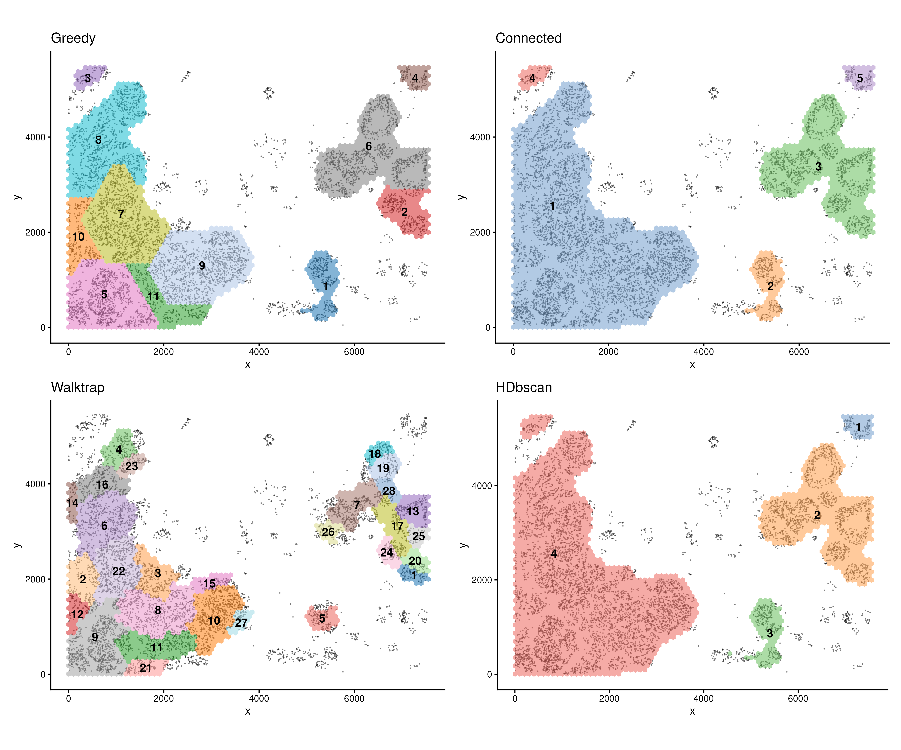
spe <- findROI(spe, coi = "Cancer", probs = 0.6)Testing relationships between cell types
After defining ROIs, we can then test the relationship between any
two cell types within each ROI or overall but account for ROI variation
using a cubic spline or a linear fit. This can be done with function
corrDensity.
cor.res <- corDensity(spe, roi = "Cancer")We can see the correlation between each pair of cell types in each ROI.
cor.res$ROI## DataFrame with 495 rows and 9 columns
## celltype1 celltype2 ROI ngrid cor.coef t
## <character> <character> <character> <numeric> <numeric> <numeric>
## 1 B Basal 1 82 0.4639830 1.116349
## 2 B Basal 2 96 0.3879847 1.461223
## 3 B Basal 3 28 0.0813146 0.197466
## 4 B Basal 4 34 -0.7833515 -2.728469
## 5 B Basal 5 255 0.0945044 0.280668
## ... ... ... ... ... ... ...
## 491 Pericyte T nk 7 283 0.156737 0.572078
## 492 Pericyte T nk 8 313 -0.111559 -0.548588
## 493 Pericyte T nk 9 322 0.413364 1.609565
## 494 Pericyte T nk 10 79 0.759291 2.910885
## 495 Pericyte T nk 11 100 0.484487 1.583253
## df p.Pos p.Neg
## <numeric> <numeric> <numeric>
## 1 4.54266 0.1599073 0.8400927
## 2 12.04899 0.0847689 0.9152311
## 3 5.85826 0.4250676 0.5749324
## 4 4.68724 0.9778585 0.0221415
## 5 8.74151 0.3927471 0.6072529
## ... ... ... ...
## 491 12.99471 0.2885162 0.711484
## 492 23.88065 0.7058097 0.294190
## 493 12.57114 0.0661522 0.933848
## 494 6.22392 0.0129198 0.987080
## 495 8.17243 0.0756135 0.924387Or the correlation between each pair of cell types across the whole slide:
cor.res$overall## DataFrame with 45 rows and 5 columns
## celltype1 celltype2 cor.coef p.Pos p.Neg
## <character> <character> <numeric> <numeric> <numeric>
## 1 B Basal 0.2198401 1.21963e-07 8.96908e-01
## 2 B Cancer -0.3922477 9.98836e-01 3.98397e-06
## 3 B Endothelial 0.3486397 1.55645e-05 9.98815e-01
## 4 B Fibroblast 0.6186526 2.62767e-12 9.99993e-01
## 5 B Lp 0.0699756 1.60630e-02 7.93106e-01
## ... ... ... ... ... ...
## 41 Macrophage Pericyte 0.438590 8.50497e-05 0.998230
## 42 Macrophage T nk 0.785632 5.82966e-21 1.000000
## 43 Mast Pericyte 0.378358 5.55024e-03 0.973966
## 44 Mast T nk 0.304846 6.20142e-05 0.998503
## 45 Pericyte T nk 0.336492 4.26117e-04 0.745982We can then visualise the statistics between each pair of cell types
using function plotCorHeatmap in the ROIs
plotCorHeatmap(cor.res$ROI)
Or the correlation between cell type pairs across the whole slide:
plotCorHeatmap(cor.res$overall)
We can look back at the co-localisation done by hoodscanR, since we were using cell types as the annotation to calculate the neighborhood probability matrix, we can see that at whole slide level, both methods generate very similar results.
hood_colocal_p
But in scider, we can focus on ROIs, we can also visualise a fitted pairwise relationship and its heterogeneity across ROIs.
We can see that in different cancer ROIs, the co-localisation status between basal cells and luminal progenitor are different. For example, they are positively correlated in ROI1 and ROI4, but negatively correlated in ROI12 and ROI16.
Spatial pattern might be vary depends on tissue context, using scider can offer a more precise approach by examining it in different ROI.
plotDensCor(spe, celltype1 = "Basal", celltype2 = "LP", roi = "Cancer") + plotROI(spe, roi = "Cancer")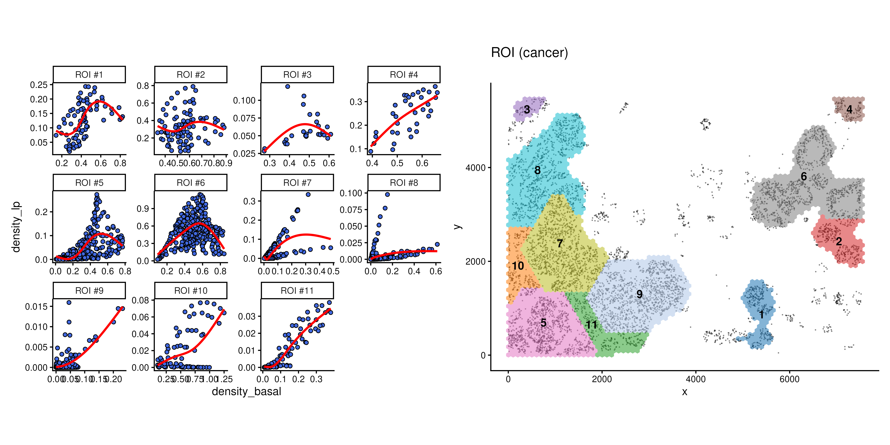
Contour‑based analysis
Based on the grid density, we can ask many biological question about the data. For example, we would like to know if a certain cell type that are located in high density of cancer cells are different to the same cell type from a different level of cancer region.
Cell annotation by contour level
To address this question, we first need to divide cells into
different levels of grid density. This can be done using a contour
identification strategy with function getContour.
spe <- getContour(spe, coi = "Cancer")Different level of contour can be visualised with cells using
plotContour.
plotContour(spe, coi = "Cancer")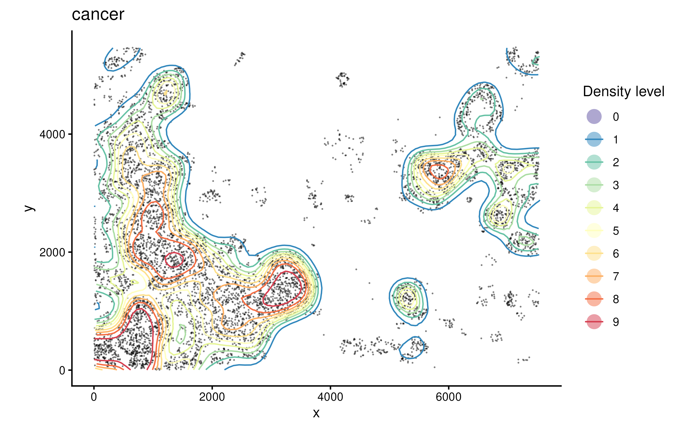
We can then annotate cells by their locations within each contour
using function allocateCells.
spe <- allocateCells(spe)We can visualise the continous regions on the tissue based on cancer density.
plotSpatial(spe, group.by = "cancer_contour", pt.alpha = 0.5)
Compare composition per level:
plotCellCompo(spe, contour = "Cancer")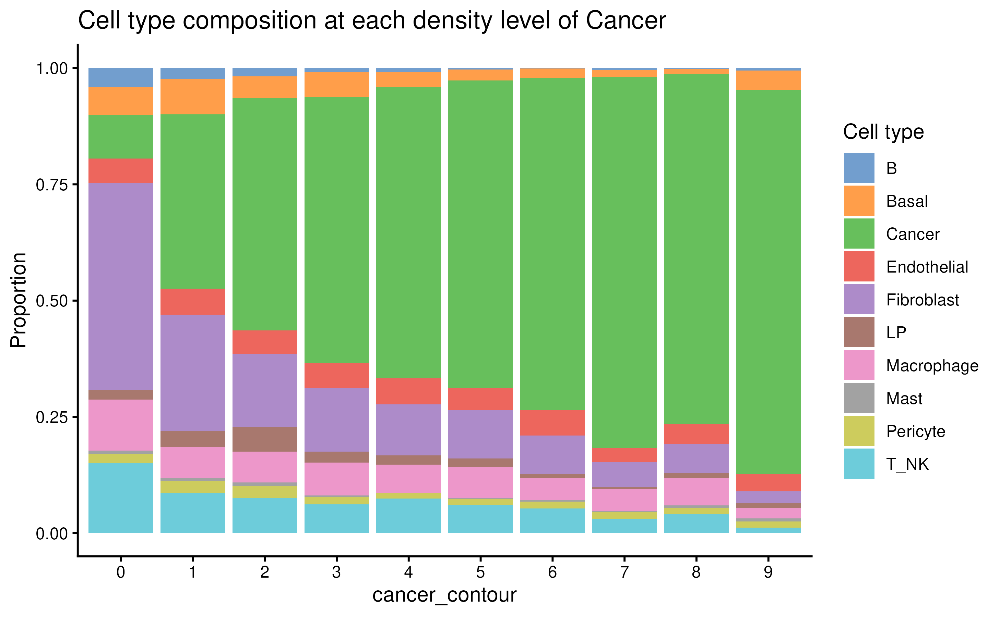
plotCellCompo(spe, contour = "Cancer", self.included = FALSE)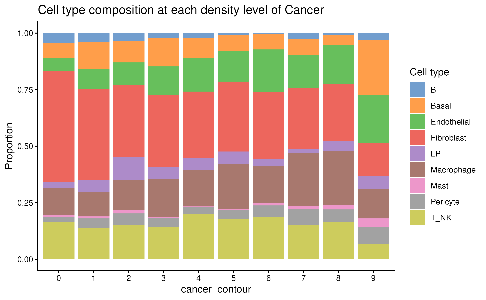
Pseudobulk
To investigate if cell types from different cancer contour regions
have different transcriptomics profiles, one way to do this is by using
the spe2PB function to pseudobulk the data by contour and
cell types.
y <- spe2PB(spe, contour = "Cancer")
y## An object of class "DGEList"
## $counts
## B_Lv0 B_Lv1 B_Lv2 B_Lv3 B_Lv4 B_Lv5 B_Lv6 B_Lv7 B_Lv8 B_Lv9 Basal_Lv0
## ABCC11 13 3 4 1 1 0 0 1 0 1 95
## ACTA2 132 12 31 5 8 1 0 4 1 3 2966
## ACTG2 312 17 13 12 4 1 0 1 0 3 2102
## ADAM9 70 9 10 5 0 2 0 2 0 0 460
## ADGRE5 138 20 17 5 1 1 1 2 0 0 91
## Basal_Lv1 Basal_Lv2 Basal_Lv3 Basal_Lv4 Basal_Lv5 Basal_Lv6 Basal_Lv7
## ABCC11 39 20 29 25 10 9 3
## ACTA2 950 542 431 260 171 137 99
## ACTG2 639 403 385 249 160 79 58
## ADAM9 106 55 66 35 21 12 17
## ADGRE5 27 11 14 7 5 0 1
## Basal_Lv8 Basal_Lv9 Cancer_Lv0 Cancer_Lv1 Cancer_Lv2 Cancer_Lv3
## ABCC11 4 13 909 1492 1647 2129
## ACTA2 59 235 1109 833 745 964
## ACTG2 30 94 1660 1395 1402 1615
## ADAM9 8 38 1236 1014 1107 1278
## ADGRE5 0 3 60 50 38 31
## Cancer_Lv4 Cancer_Lv5 Cancer_Lv6 Cancer_Lv7 Cancer_Lv8 Cancer_Lv9
## ABCC11 1987 1958 2153 2240 2269 1528
## ACTA2 789 772 665 790 695 625
## ACTG2 1318 1309 1309 1518 1344 1215
## ADAM9 1280 1223 1295 1509 1400 1398
## ADGRE5 28 28 22 29 23 15
## Endothelial_Lv0 Endothelial_Lv1 Endothelial_Lv2 Endothelial_Lv3
## ABCC11 35 25 10 13
## ACTA2 1338 393 239 250
## ACTG2 578 114 94 109
## ADAM9 368 89 72 69
## ADGRE5 165 48 37 36
## Endothelial_Lv4 Endothelial_Lv5 Endothelial_Lv6 Endothelial_Lv7
## ABCC11 10 10 14 5
## ACTA2 273 169 119 107
## ACTG2 95 75 63 39
## ADAM9 64 82 63 29
## ADGRE5 29 16 16 18
## Endothelial_Lv8 Endothelial_Lv9 Fibroblast_Lv0 Fibroblast_Lv1
## ABCC11 11 9 711 125
## ACTA2 152 112 9841 1337
## ACTG2 41 43 6337 670
## ADAM9 40 39 4127 465
## ADGRE5 12 12 1791 180
## Fibroblast_Lv2 Fibroblast_Lv3 Fibroblast_Lv4 Fibroblast_Lv5
## ABCC11 80 67 62 47
## ACTA2 867 720 598 503
## ACTG2 343 278 166 130
## ADAM9 227 230 145 122
## ADGRE5 80 70 53 34
## Fibroblast_Lv6 Fibroblast_Lv7 Fibroblast_Lv8 Fibroblast_Lv9 LP_Lv0
## ABCC11 20 18 22 10 11
## ACTA2 368 265 318 130 111
## ACTG2 108 55 81 29 158
## ADAM9 90 60 57 22 249
## ADGRE5 30 26 15 5 39
## LP_Lv1 LP_Lv2 LP_Lv3 LP_Lv4 LP_Lv5 LP_Lv6 LP_Lv7 LP_Lv8 LP_Lv9
## ABCC11 46 55 31 24 5 3 1 2 2
## ACTA2 31 52 16 18 11 8 6 6 7
## ACTG2 126 155 50 56 38 29 8 15 0
## ADAM9 181 239 130 100 64 35 33 23 6
## ADGRE5 16 17 8 10 5 2 3 1 0
## Macrophage_Lv0 Macrophage_Lv1 Macrophage_Lv2 Macrophage_Lv3
## ABCC11 94 17 21 18
## ACTA2 754 107 86 99
## ACTG2 1324 159 141 128
## ADAM9 605 91 115 108
## ADGRE5 442 42 43 27
## Macrophage_Lv4 Macrophage_Lv5 Macrophage_Lv6 Macrophage_Lv7
## ABCC11 23 19 21 21
## ACTA2 96 83 61 47
## ACTG2 97 97 61 62
## ADAM9 78 106 61 69
## ADGRE5 28 25 12 15
## Macrophage_Lv8 Macrophage_Lv9 Mast_Lv0 Mast_Lv1 Mast_Lv2 Mast_Lv3
## ABCC11 7 2 8 2 2 0
## ACTA2 49 24 61 11 17 1
## ACTG2 104 22 60 4 15 2
## ADAM9 63 20 29 4 9 1
## ADGRE5 15 4 29 1 5 2
## Mast_Lv4 Mast_Lv5 Mast_Lv6 Mast_Lv7 Mast_Lv8 Mast_Lv9 Pericyte_Lv0
## ABCC11 0 0 0 2 5 0 13
## ACTA2 0 1 4 1 12 6 1917
## ACTG2 0 1 1 7 3 2 600
## ADAM9 0 0 2 0 4 1 145
## ADGRE5 1 0 0 0 0 2 127
## Pericyte_Lv1 Pericyte_Lv2 Pericyte_Lv3 Pericyte_Lv4 Pericyte_Lv5
## ABCC11 7 3 2 2 4
## ACTA2 517 316 260 127 127
## ACTG2 125 72 57 43 20
## ADAM9 57 39 24 9 10
## ADGRE5 50 19 14 9 4
## Pericyte_Lv6 Pericyte_Lv7 Pericyte_Lv8 Pericyte_Lv9 T_NK_Lv0 T_NK_Lv1
## ABCC11 6 6 1 4 44 14
## ACTA2 83 124 112 61 722 129
## ACTG2 19 23 19 15 1156 140
## ADAM9 14 14 10 7 198 33
## ADGRE5 9 8 1 5 789 121
## T_NK_Lv2 T_NK_Lv3 T_NK_Lv4 T_NK_Lv5 T_NK_Lv6 T_NK_Lv7 T_NK_Lv8 T_NK_Lv9
## ABCC11 20 19 18 14 16 7 7 0
## ACTA2 118 74 97 77 45 28 52 13
## ACTG2 93 70 73 87 39 19 28 5
## ADAM9 42 25 21 33 26 12 18 4
## ADGRE5 81 46 62 47 26 26 28 3
## 308 more rows ...
##
## $samples
## group lib.size norm.factors n.cells cell_type contour.level
## B_Lv0 1 33360 1 355 B 0
## B_Lv1 1 5047 1 47 B 1
## B_Lv2 1 3244 1 27 B 2
## B_Lv3 1 1431 1 13 B 3
## B_Lv4 1 1417 1 11 B 4
## 95 more rows ...
##
## $genes
## genes
## ABCC11 ABCC11
## ACTA2 ACTA2
## ACTG2 ACTG2
## ADAM9 ADAM9
## ADGRE5 ADGRE5
## 308 more rows ...
dim(y)## [1] 313 100Now that the object become a DGEList object, we can then use package
such as edgeR to examine the data.
We can see that in PCA space, the pseudobulk data are clustered by cell type, and within cell type, we can observe a trend of variance by contour level.
y <- edgeR::calcNormFactors(y)
pca.res <- prcomp(t(edgeR::cpm(y, log = TRUE)), rank. = 10)$x
cbind(y$samples, pca.res) %>%
ggplot(aes(PC1, PC2, color = cell_type)) +
geom_point(size = 5) +
scale_color_manual(values = ws_colors) +
ggrepel::geom_text_repel(aes(label = contour.level)) +
theme_classic()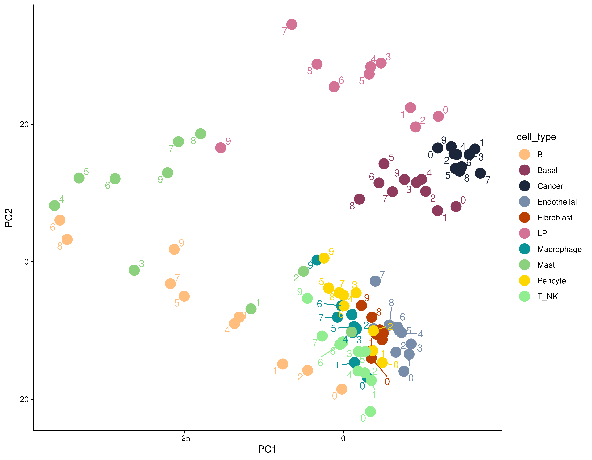
Part C — Useful utilities for Python tools
Many tools aimming to analyse ST data have built in Python,
especially tools that built based on deep-learning algorithms. In
python, most ST data are handled using the AnnData
infrastructure. Therefore, it’s important to learn how to transfer
SpatialExperiment object data into an AnnData object in
Python. Which can then be used for many Python-based methods.
In AnnData object, the spatial coordinates is usually
store in the obsm slot, which is used to store all the
dimension reduction results. So we need to first transfer the cell
coordinates to the reducedDims slot of the object.
Then we can output a .h5ad file from the
SpatialExperiment object, which can then read by
scanpy.read_h5ad via the scanpy library in
Python.
spe <- readRDS("../inst/extdata/spe_S1_Rep1.RDS")
reducedDims(spe) <- list(spatial = spatialCoords(spe))
zellkonverter::writeH5AD(spe, file = "../inst/extdata/spe.h5ad", compression = "gzip")Summary
The downstream analysis of the spatial transcriptomics data depends
on the biological questions being asked, hoodscanR and
scider are designed to look at spatial transcriptomics data
in different perspectives, therefore offering .
Packages used
This workflow depends on various packages from version 3.23 of the Bioconductor project, running on R Under development (unstable) (2025-12-07 r89119) or higher. The complete list of the packages used for this workflow are shown below:
## R Under development (unstable) (2025-12-07 r89119)
## Platform: x86_64-pc-linux-gnu
## Running under: Ubuntu 24.04.3 LTS
##
## Matrix products: default
## BLAS: /usr/lib/x86_64-linux-gnu/openblas-pthread/libblas.so.3
## LAPACK: /usr/lib/x86_64-linux-gnu/openblas-pthread/libopenblasp-r0.3.26.so; LAPACK version 3.12.0
##
## locale:
## [1] LC_CTYPE=en_US.UTF-8 LC_NUMERIC=C
## [3] LC_TIME=en_US.UTF-8 LC_COLLATE=en_US.UTF-8
## [5] LC_MONETARY=en_US.UTF-8 LC_MESSAGES=en_US.UTF-8
## [7] LC_PAPER=en_US.UTF-8 LC_NAME=C
## [9] LC_ADDRESS=C LC_TELEPHONE=C
## [11] LC_MEASUREMENT=en_US.UTF-8 LC_IDENTIFICATION=C
##
## time zone: Etc/UTC
## tzcode source: system (glibc)
##
## attached base packages:
## [1] stats4 stats graphics grDevices utils datasets methods
## [8] base
##
## other attached packages:
## [1] sf_1.0-23 future_1.68.0
## [3] Seurat_5.3.1 SeuratObject_5.2.0
## [5] sp_2.2-0 SpatialExperiment_1.21.0
## [7] SingleCellExperiment_1.33.0 SummarizedExperiment_1.41.0
## [9] Biobase_2.71.0 GenomicRanges_1.63.1
## [11] Seqinfo_1.1.0 IRanges_2.45.0
## [13] S4Vectors_0.49.0 BiocGenerics_0.57.0
## [15] generics_0.1.4 MatrixGenerics_1.23.0
## [17] matrixStats_1.5.0 lubridate_1.9.4
## [19] forcats_1.0.1 stringr_1.6.0
## [21] dplyr_1.1.4 purrr_1.2.0
## [23] readr_2.1.6 tidyr_1.3.1
## [25] tibble_3.3.0 ggplot2_4.0.1
## [27] tidyverse_2.0.0 scider_1.9.0
## [29] hoodscanR_1.9.0
##
## loaded via a namespace (and not attached):
## [1] RcppAnnoy_0.0.22 splines_4.6.0 later_1.4.4
## [4] filelock_1.0.3 polyclip_1.10-7 janitor_2.2.1
## [7] fastDummies_1.7.5 lifecycle_1.0.4 edgeR_4.9.1
## [10] doParallel_1.0.17 globals_0.18.0 lattice_0.22-7
## [13] MASS_7.3-65 magrittr_2.0.4 limma_3.67.0
## [16] plotly_4.11.0 sass_0.4.10 rmarkdown_2.30
## [19] jquerylib_0.1.4 yaml_2.3.12 httpuv_1.6.16
## [22] otel_0.2.0 sctransform_0.4.2 spam_2.11-1
## [25] spatstat.sparse_3.1-0 reticulate_1.44.1 DBI_1.2.3
## [28] cowplot_1.2.0 pbapply_1.7-4 RColorBrewer_1.1-3
## [31] abind_1.4-8 Rtsne_0.17 SpatialPack_0.4-1
## [34] circlize_0.4.17 ggrepel_0.9.6 irlba_2.3.5.1
## [37] listenv_0.10.0 spatstat.utils_3.2-0 pheatmap_1.0.13
## [40] BiocStyle_2.39.0 units_1.0-0 goftest_1.2-3
## [43] RSpectra_0.16-2 spatstat.random_3.4-3 fitdistrplus_1.2-4
## [46] parallelly_1.45.1 pkgdown_2.2.0 codetools_0.2-20
## [49] DelayedArray_0.37.0 prettydoc_0.4.1 tidyselect_1.2.1
## [52] shape_1.4.6.1 farver_2.1.2 spatstat.explore_3.6-0
## [55] jsonlite_2.0.0 GetoptLong_1.1.0 e1071_1.7-16
## [58] progressr_0.18.0 ggridges_0.5.7 survival_3.8-3
## [61] iterators_1.0.14 hexDensity_1.4.10 systemfonts_1.3.1
## [64] foreach_1.5.2 dbscan_1.2.3 tools_4.6.0
## [67] ragg_1.5.0 ica_1.0-3 Rcpp_1.1.0.8.1
## [70] glue_1.8.0 gridExtra_2.3 SparseArray_1.11.8
## [73] mgcv_1.9-4 xfun_0.54 withr_3.0.2
## [76] BiocManager_1.30.27 fastmap_1.2.0 basilisk_1.23.0
## [79] digest_0.6.39 timechange_0.3.0 R6_2.6.1
## [82] mime_0.13 textshaping_1.0.4 colorspace_2.1-2
## [85] scattermore_1.2 tensor_1.5.1 spatstat.data_3.1-9
## [88] hexbin_1.28.5 data.table_1.17.8 class_7.3-23
## [91] httr_1.4.7 htmlwidgets_1.6.4 S4Arrays_1.11.1
## [94] uwot_0.2.4 pkgconfig_2.0.3 scico_1.5.0
## [97] gtable_0.3.6 ComplexHeatmap_2.27.0 lmtest_0.9-40
## [100] S7_0.2.1 XVector_0.51.0 fastmatrix_0.6-4
## [103] htmltools_0.5.9 dotCall64_1.2 clue_0.3-66
## [106] scales_1.4.0 png_0.1-8 snakecase_0.11.1
## [109] spatstat.univar_3.1-5 knitr_1.50 tzdb_0.5.0
## [112] reshape2_1.4.5 rjson_0.2.23 nlme_3.1-168
## [115] proxy_0.4-27 cachem_1.1.0 zoo_1.8-14
## [118] GlobalOptions_0.1.3 KernSmooth_2.23-26 parallel_4.6.0
## [121] miniUI_0.1.2 zellkonverter_1.21.0 desc_1.4.3
## [124] pillar_1.11.1 grid_4.6.0 vctrs_0.6.5
## [127] RANN_2.6.2 promises_1.5.0 xtable_1.8-4
## [130] cluster_2.1.8.1 evaluate_1.0.5 magick_2.9.0
## [133] locfit_1.5-9.12 cli_3.6.5 compiler_4.6.0
## [136] rlang_1.1.6 crayon_1.5.3 future.apply_1.20.1
## [139] labeling_0.4.3 classInt_0.4-11 plyr_1.8.9
## [142] fs_1.6.6 stringi_1.8.7 viridisLite_0.4.2
## [145] deldir_2.0-4 lazyeval_0.2.2 spatstat.geom_3.6-1
## [148] Matrix_1.7-4 dir.expiry_1.19.0 RcppHNSW_0.6.0
## [151] hms_1.1.4 patchwork_1.3.2 statmod_1.5.1
## [154] shiny_1.12.1 ROCR_1.0-11 igraph_2.2.1
## [157] bslib_0.9.0 lwgeom_0.2-14